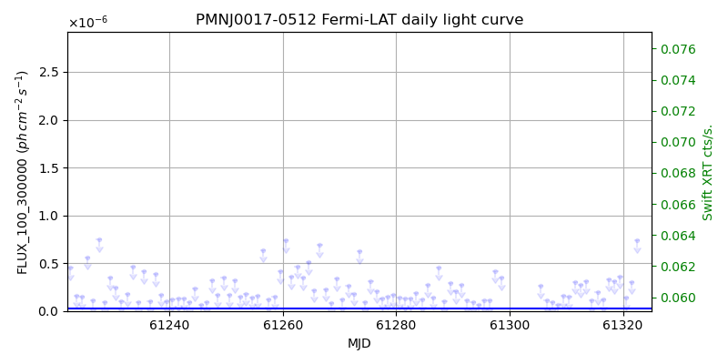
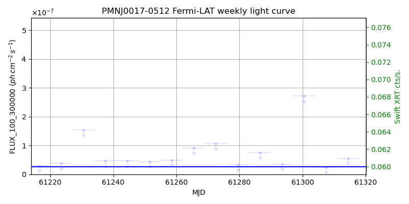
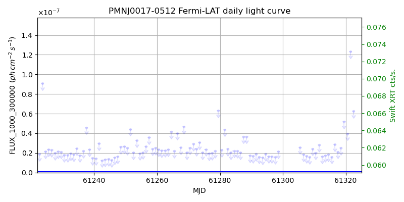
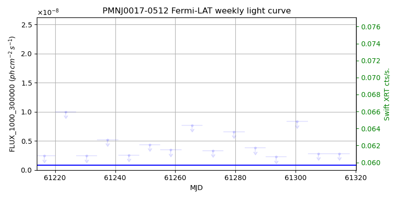

LAT Lightcurve site: https://fermi.gsfc.nasa.gov/ssc/data/access/lat/msl_lc/source/PMN_J0017-0512
Swift site: https://www.swift.psu.edu/monitoring/source.php?source=PMNJ0017-0512
NED: Query
Time of last update of this page: UT: 2026-10-10 15:11 (MJD: 61323.633)
| Property | Value |
|---|---|
| R.A. | 0:17:35.76 |
| Dec. | -5:12:43.2 |
| z | 0.227 |
| 3FGL SpectrumType | PowerLaw |
| 3FGL PL Index | 2.51 |
| 3FGL Flux_100_300000 | 2.55e-08 1 / (s cm2) |
| 3FGL Flux_1000_300000 | 7.96e-10 1 / (s cm2) |
| 3FGL Flux >200 GeV | 2.72e-13 1 / (s cm2) |
| 3FGL Extrap. Crab >200 GeV | 0.00 |
| 3FGL Flux After EBL Absorption >200GeV | 1.27e-13 1 / (s cm2) |
| 3FGL EBL Crab Fraction >200GeV | 0.00 |

| MJD | dMJD | Flux | dFlux | Frac3FGL | FracCrab>200GeV | EBLFracCrab>200GeV |
|---|---|---|---|---|---|---|
| 61318.50 | 0.50 | 3.07e-07 | 0.00e+00 | 0.00 | 0.00 | 0.00 |
| 61319.50 | 0.50 | 3.63e-07 | 0.00e+00 | 0.00 | 0.00 | 0.00 |
| 61320.50 | 0.50 | 1.38e-07 | 0.00e+00 | 0.00 | 0.00 | 0.00 |
| 61321.50 | 0.50 | 3.04e-07 | 0.00e+00 | 0.00 | 0.00 | 0.00 |
| 61322.50 | 0.50 | 7.41e-07 | 0.00e+00 | 0.00 | 0.00 | 0.00 |

| MJD | dMJD | Flux | dFlux | Frac3FGL | FracCrab>200GeV | EBLFracCrab>200GeV |
|---|---|---|---|---|---|---|
| 61286.50 | 3.50 | 7.48e-08 | 0.00e+00 | 0.00 | 0.00 | 0.00 |
| 61293.50 | 3.50 | 3.57e-08 | 0.00e+00 | 0.00 | 0.00 | 0.00 |
| 61300.50 | 3.50 | 2.71e-07 | 0.00e+00 | 0.00 | 0.00 | 0.00 |
| 61307.50 | 3.50 | 2.48e-08 | 0.00e+00 | 0.00 | 0.00 | 0.00 |
| 61314.50 | 3.50 | 5.52e-08 | 0.00e+00 | 0.00 | 0.00 | 0.00 |

| MJD | dMJD | Flux | dFlux | Frac3FGL | FracCrab>200GeV | EBLFracCrab>200GeV |
|---|---|---|---|---|---|---|
| 61318.50 | 0.50 | 2.51e-08 | 0.00e+00 | 0.00 | 0.00 | 0.00 |
| 61319.50 | 0.50 | 5.19e-08 | 0.00e+00 | 0.00 | 0.00 | 0.00 |
| 61320.50 | 0.50 | 3.97e-08 | 0.00e+00 | 0.00 | 0.00 | 0.00 |
| 61321.50 | 0.50 | 1.23e-07 | 0.00e+00 | 0.00 | 0.00 | 0.00 |
| 61322.50 | 0.50 | 6.27e-08 | 0.00e+00 | 0.00 | 0.00 | 0.00 |

| MJD | dMJD | Flux | dFlux | Frac3FGL | FracCrab>200GeV | EBLFracCrab>200GeV |
|---|---|---|---|---|---|---|
| 61286.50 | 3.50 | 3.82e-09 | 0.00e+00 | 0.00 | 0.00 | 0.00 |
| 61293.50 | 3.50 | 2.30e-09 | 0.00e+00 | 0.00 | 0.00 | 0.00 |
| 61300.50 | 3.50 | 8.33e-09 | 0.00e+00 | 0.00 | 0.00 | 0.00 |
| 61307.50 | 3.50 | 2.82e-09 | 0.00e+00 | 0.00 | 0.00 | 0.00 |
| 61314.50 | 3.50 | 2.82e-09 | 0.00e+00 | 0.00 | 0.00 | 0.00 |
--------------------------------------------------------- Using user-supplied coords: 0:17:35.76 -5:12:43.2 2000 --------------------------------------------------------- FLWO UT night of: 2026-10-11 Local Sid. @ Midnight: 00:55 Sunset (-15.0) (local, UT): 19:04 02:04 Sunrise (-15.0) (local, UT): 05:18 12:18 Moonrise (local, UT): Moonset (local, UT): Moon phase: 0.01 --------------------------------------------------------- AzTime LSID UT Obj_el Obj_az Mn_el Mn_az Sep. --------------------------------------------------------- 19:04 19:58 02:04 18.2 108.2 -16.1 264.2 157.0 19:34 20:29 02:34 24.2 113.0 -22.3 267.8 156.8 20:04 20:59 03:04 30.0 118.4 -28.5 271.5 156.5 20:34 21:29 03:34 35.4 124.4 -34.7 275.4 156.3 21:04 21:59 04:04 40.5 131.5 -40.8 279.7 156.0 21:34 22:29 04:34 44.9 139.6 -46.8 284.6 155.8 22:04 22:59 05:04 48.7 149.1 -52.7 290.5 155.5 22:34 23:29 05:34 51.4 160.0 -58.4 297.7 155.2 23:04 23:59 06:04 53.0 172.0 -63.6 307.3 154.9 23:34 00:29 06:34 53.2 184.5 -68.1 320.3 154.6 00:04 00:59 07:04 52.0 196.6 -71.3 338.2 154.3 00:34 01:29 07:34 49.6 207.9 -72.6 0.4 154.0 01:04 01:59 08:04 46.1 217.8 -71.5 22.7 153.6 01:34 02:30 08:34 41.8 226.3 -68.3 40.8 153.3 02:04 03:00 09:04 36.9 233.6 -63.9 54.1 153.0 02:34 03:30 09:34 31.6 240.0 -58.7 63.8 152.7 03:04 04:00 10:04 25.9 245.5 -53.1 71.2 152.4 03:34 04:30 10:34 20.0 250.5 -47.3 77.2 152.1 04:04 05:00 11:04 13.9 255.0 -41.4 82.2 151.7 04:34 05:30 11:34 7.7 259.3 -35.3 86.6 151.4 05:04 06:00 12:04 1.6 263.3 -29.2 90.6 151.1 05:18 06:14 12:18 -0.8 265.1 -26.5 92.4 151.0 --------------------------------------------------------- Source never above horizon of 55.0 deg. Dark hours >55 deg.: 0.00